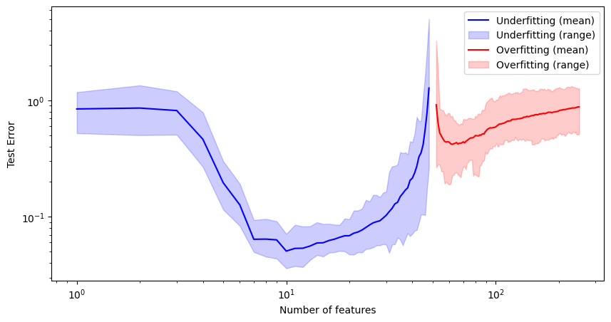
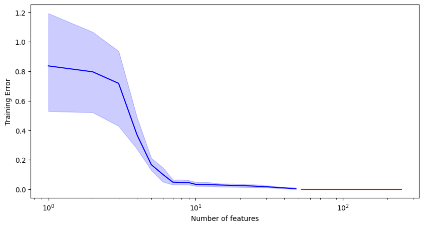
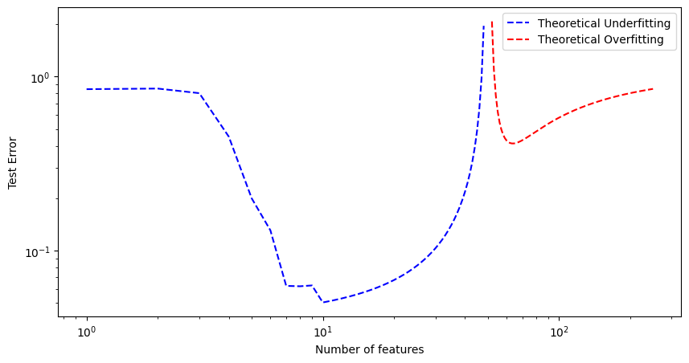

# linear regression on synthetic data
import numpy as np
import matplotlib.pyplot as plt
np.random.seed(0)
s = 10 # number of true features
beta_star = np.random.randn(s)
# normalize beta_star
beta_star /= np.linalg.norm(beta_star)
n = 50 # number of samples
p_max = 250 # max possible number of features
sigma = 0.2 # noise level
def generate_samples():
"""
Generate synthetic data for linear regression.
"""
X = np.random.randn(p_max, n)
noise = sigma * np.random.randn(n) # generate noise
# generate response variable
y = X[:s, :].T @ beta_star + noise
return X, y
p_under = list(range(1, n-1))
p_over = list(range(n+2, p_max+1))
err_under = []
err_over = []
train_err_under = []
train_err_over = []
def compute_error(X_train, y_train, X_test, y_test, p):
"""
Compute training and test errors for linear regression.
"""
X = X_train[:p, :] # select first p features
beta = np.linalg.pinv(X.T) @ y_train # compute beta
train_error = np.mean((y_train - X.T @ beta) ** 2) # compute train error
X = X_test[:p, :] # select first p features
y_pred = X.T @ beta # compute predictions
test_error = np.mean((y_test - y_pred) ** 2) # compute test error
return train_error, test_error
num_of_trials = 20
for ii in range(num_of_trials):
X_train, y_train = generate_samples()
X_test, y_test = generate_samples() # generate test data
test_errors_under = []
test_errors_over = []
train_errors_under = []
train_errors_over = []
for p in p_under:
train_error, test_error = compute_error(X_train, y_train, X_test, y_test, p)
test_errors_under.append(test_error)
train_errors_under.append(train_error)
for p in p_over:
train_error, test_error = compute_error(X_train, y_train, X_test, y_test, p)
test_errors_over.append(test_error)
train_errors_over.append(train_error)
# store errors
err_under.append(test_errors_under)
err_over.append(test_errors_over)
train_err_under.append(train_errors_under)
train_err_over.append(train_errors_over)Linear Regression and Generalization
This notebook uses synthetic data to study how linear regression behaves as the number of fitted features changes.
What to notice: underparameterized and overparameterized models can have very different train and test error behavior.
Simulate Train and Test Error
The first cell generates data, fits linear models with different feature counts, and records errors across trials.
Plot Empirical Error Bands
This cell summarizes the simulation with mean curves and variability bands.
err_under_max = np.max(err_under, axis=0)
err_under_min = np.min(err_under, axis=0)
err_over_max = np.max(err_over, axis=0)
err_over_min = np.min(err_over, axis=0)
err_under_mean = np.mean(err_under, axis=0)
err_over_mean = np.mean(err_over, axis=0)
plt.figure(figsize=(10, 5))
# Plot underfitting errors
plt.plot(p_under, err_under_mean, label='Underfitting (mean)', color='blue')
plt.fill_between(p_under, err_under_min, err_under_max, color='blue', alpha=0.2, label='Underfitting (range)')
# Plot overfitting errors
plt.plot(p_over, err_over_mean, label='Overfitting (mean)', color='red')
plt.fill_between(p_over, err_over_min, err_over_max, color='red', alpha=0.2, label='Overfitting (range)')
plt.xlabel('Number of features')
plt.ylabel('Test Error')
plt.yscale('log')
plt.xscale('log')
plt.legend()
plt.show()
# show the training errors in another figure
train_err_under_max = np.max(train_err_under, axis=0)
train_err_under_min = np.min(train_err_under, axis=0)
train_err_over_max = np.max(train_err_over, axis=0)
train_err_over_min = np.min(train_err_over, axis=0)
train_err_under_mean = np.mean(train_err_under, axis=0)
train_err_over_mean = np.mean(train_err_over, axis=0)
plt.figure(figsize=(10, 5))
# Plot underfitting training errors
plt.plot(p_under, train_err_under_mean, label='Underfitting (mean)', color='blue')
plt.fill_between(p_under, train_err_under_min, train_err_under_max, color='blue', alpha=0.2, label='Underfitting (range)')
# Plot overfitting training errors
plt.plot(p_over, train_err_over_mean, label='Overfitting (mean)', color='red')
plt.fill_between(p_over, train_err_over_min, train_err_over_max, color='red', alpha=0.2, label='Overfitting (range)')
plt.xlabel('Number of features')
plt.ylabel('Training Error')
# plt.yscale('log')
plt.xscale('log')
plt.show()

Compare with Theory
The final cell computes the theoretical test error curve for comparison with the experiment.
def theoretical_test_error(p, n, s, sigma, beta_star):
"""
Compute the theoretical test error for linear regression.
"""
if p >= n-1 and p <= n+1:
return None
if p < s:
return (np.sum(beta_star[p:] ** 2) + sigma ** 2) * ((n - 1) / (n - p - 1))
if p < n - 1:
return (n - 1) / (n - p - 1) * sigma ** 2
return (1 - n / p) * np.sum(beta_star ** 2) + sigma ** 2 + n / (p - n - 1) * sigma ** 2
p = np.array(p_under + p_over)
theoretical_errors = []
for pp in p:
theoretical_errors.append(theoretical_test_error(pp, n, s, sigma, beta_star))
theoretical_errors = np.array(theoretical_errors)
theoretical_errors_under = theoretical_errors[:len(p_under)]
theoretical_errors_over = theoretical_errors[len(p_under):]
plt.figure(figsize=(10, 5))
# Plot theoretical errors
plt.plot(p_under, theoretical_errors_under, label='Theoretical Underfitting', color='blue', linestyle='--')
plt.plot(p_over, theoretical_errors_over, label='Theoretical Overfitting', color='red', linestyle='--')
plt.xlabel('Number of features')
plt.ylabel('Test Error')
plt.yscale('log')
plt.xscale('log')
plt.legend()
plt.show()